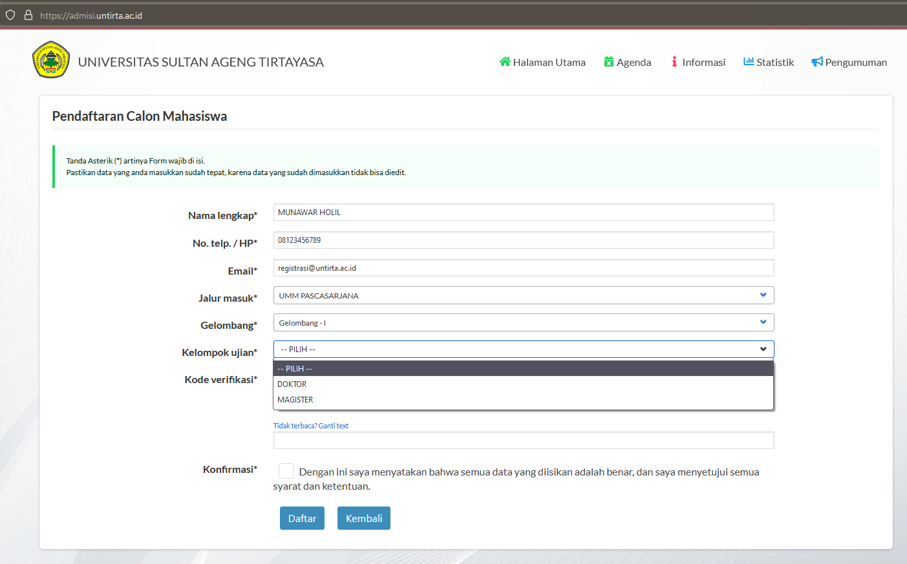

Penerimaan Mahasiswa Baru (PMB) Pascasarjana TA 2022/2023
Program Doktor (S3) dan Program Magister (S2) Pascasarjana Universitas Sultan Ageng Tirtayasa (Untirta) berkontribusi dalam pengembangan keilmuan untuk menghasilkan karya-karya ilmiah unggulan dan menghasilkan lulusan Doktor (S3) dan Program Magister (S2) yang kompeten. Pascasarjana Untirta membuka pendaftaran mahasiswa baru Magister (S2) dan Doktor (S3) Tahun Akademik 2022/2023.
Jadwal Penerimaan Mahasiswa Baru (PMB)
Gelombang 1
Pendaftaran: 14 Februari 2022 – 11 April 2022
Pelaksanaan Seleksi Test dan Wawancara : 16 April 2022
Pengumuman Hasil Seleksi: 19 April 2022
Registrasi / Pembayaran SPP: 20 – 29 April 2022
Gelombang 2 (Apabila Kuota Gelombang 1 Belum Terpenuhi)
Pendaftaran: 09 Mei 2022 – 13 Juli 2022
Pelaksanaan Seleksi: 16 Juli 2022
Pengumuman Hasil Seleksi: 20 Juli 2022
Registrasi / Pembayaran SPP: 21 – 29 Juli 2022
Kegiatan Orientasi MahasiswaBaru: 06 Agustus 2022
Kegiatan Penyegaran Mahasiswa Baru: 08 – 27 Agustus 2022
Awal Perkuliahan: 01 September 2022
Program Studi
Program Doktor (S3)
- Program Studi Doktor Pendidikan
- Program Studi Doktor Ilmu Akuntansi
- Program Studi Doktor Ilmu Pertanian
Program Magister (S2)
Pendidikan Bahasa Indonesia
Teknologi Pendidikan
- Konsentrasi Manajemen Pendidikan
- Konsentrasi PAUD
Hukum
- Konsentrasi Hukum Pidana
- Konsentrasi Hukum Perdata
- Konsentrasi Hukum Tata Negara
- Konsentrasi Hukum Kesehatan
Administrasi Publik
Akuntansi
Manajemen
- Konsentrasi Manajemen Pemasaran
- Konsentrasi Manajemen SDM
- Konsentrasi Manajemen Keuangan
Pendidikan Bahasa Inggris
Pendidikan Matematika
Ilmu Pertanian
Ilmu Komunikasi
Teknik Kimia
Pendidikan Dasar
Ekonomi
Jadwal Pelaksanaan
| Item | Waktu |
|---|---|
| Persiapan Seleksi | : pukul 07:00 - 07:30 Wib |
| Sesi 1 | : pukul 07:30 - 09:30 Wib |
| Istirahat | : pukul 09:30 - 10:00 Wib |
| Sesi 2 | : pukul 10:00 -12:00 Wib |
Biaya Perkuliahan
| Rincian | Biaya | |
|---|---|---|
| Program Magister (S2) | Program Doktor (S3) | |
| Pendaftaran | Rp500.000,00 | Rp650.000,00 |
| Matrikulasi | Rp1.000.000,00 | Rp5.000.000,00 |
| SPP/Semester | Rp8.500.000,00 | Doktor Pendidikan dan Doktor Ilmu Pertanian: Rp11.000.000,00 Doktor Ilmu Akuntansi: Rp15.000.000,00 |
| Jaket Almamater, KTM, Kartu Perpustakaan |
Rp550.000,00 | |
| Intensive English Program | Rp500.000,00 | - |
Prosedur Pendaftaran

Buka laman https://admisi.untirta.ac.id
Klik Daftar, masukkan/ketik: Nama Lengkap, No. Telepon/HP, alamat e-mail, pilih jalur masuk Pascasarjana, pilih Gelombang, Pilih Kelompok Ujian MAGISTER atau DOKTOR, dan ketik ulang Kode Verifikasi.


Klik Daftar untu Mencetak Surat Konfirmasi Pendaftaran untuk dibawa ke BNI dan melakukan Pembayaran.
contoh :

Melakukan Pembayaran Pendaftaran
Pembayaran pendaftaran dilakukan untuk mengaktifkan Nomor Pendaftaran (token) dan Password. Untuk Selanjutnya bisa digunakan untuk Login ke https://admisi.untirta.ac.id dan melengkapi data.
Pembayaran melalui Bank BNI :
- Teller BNI dengan menunjukkan hasil cetak Surat Konfirmasi Pendaftaran.
- M-Banking BNI dengan cara klik Pembayaran dan memasukkan Kode Biling Nomor Pendaftaran
Unggah Dokumen di laman https://admisi.untirta.ac.id
Login dengan menggunakan Nomor Pendaftaran dan Password yang ada pada Surat Konfirmasi Pendaftaran.
Dokumen/syarat pendukung dalam bentuk file pdf atau jpg (maximal 275kb) yang harus disiapkan :
A. PROGRAM MAGISTER (S2)
Pas Photo terbaru
Isi Biodata
Unggah (upload) data pendukung:
Ijazah S-1, Transkrip Nilai S-1 (Program Magister)
Sertifikat akreditasi program studi pada jenjang S1 yang berlaku terakhir
Sertifikat TOEFL dengan skor minimal 400.
Surat izin/tugas belajar dari instansi tempat bekerja bagi pendaftar yang sedang bekerja
Surat keterangan sehat dari Fasilitas Kesehatan yang memiliki izin dari pemerintah
Surat rekomendasi kelayakan akademik dari dua dosen bergelar Doktor atau pimpinan bergelar Doktor.
Surat Pernyataan Keaslian Dokumen pendaftaran (download).
Surat Pernyataan kesanggupan pembiayaan pendidikan.
Kumpulan Dokumen :
Unduh, cetak, isi, scan, dan unggah dokumen di sini bagi S2
B. PROGRAM DOKTOR (S3)
Pas Photo terbaru
Isi Biodata
Unggah (upload) data pendukung:
Ijazah S-1, S-2, Transkrip Nilai S-1, S-2 (Program Doktor)
Khusus Program Studi Doktor Ilmu Akuntansi wajib melampirkan Ijazah S1 Akuntansi
Sertifikat akreditasi program studi pada jenjang S2 yang berlaku terakhir
Sertifikat TOEFL dengan skor minimal 450.
Surat izin/tugas belajar dari instansi tempat bekerja bagi pendaftar yang sedang bekerja
Surat keterangan sehat dari Fasilitas Kesehatan yang memiliki izin dari pemerintah
Surat rekomendasi kelayakan akademik dari dua Profesor atau Doktor.
Surat Pernyataan Keaslian Dokumen pendaftaran (download).
Surat Pernyataan kesanggupan pembiayaan pendidikan.
Kumpulan Dokumen :
Unduh, cetak, isi, scan, dan unggah dokumen di sini bagi S3
Mengunggah Proposal mini Disertasi khusus S3
Proposal Mini adalah ide atau gagasan penelitian yang dituangkan dalam bentuk tulisan yang ditulis oleh mahasiswa S-3 Pascasarjana Untirta dengan maksud untuk mengetahui rencana penelitian dan menentukan dosen pembimbing/promotor.
Proposal Mini terdiri dari empat bagian:
Bagian pertama, membahas mengenai latar belakangan pemilihan topik, alasan pemilihan topik, pertanyaan penelitian, tujuan penelitian, dan kebaruan/inovasi penelitian (state of theart)
Bagian kedua, menjelaskan secara singkat mengenai teori utama dan teori pendukung yang akan digunakan dalam penelitian
Bagian ketiga, membahas tentang rencana metode yang akan diterapkan dalam penelitian, termasuk waktu, tempat, dan desain/pendekatan penelitian
Bagian keempat, mencantumkan daftar pustaka
Ketentuan Proposal Mini:
Judul yang terdiri dari maksimum 12 kata
Tulisan terdiri dari 1500-2000 kata (6 – 7 lembar)
Ditulis menggunakan i, dua spasi, font Times New Roman, ukuran font 12 poin, dan ukuran kertas A4
Penulisan sitasi dan daftar pustaka menggunakan reference manager (EndNote, Mendeley, atau program lain)
Memuat minimal 15 buah artikel jurnal sebagai rujukan utama yang terbit dalam tujuh tahun terakhir.
f) Secara umum, proposal mini ditulis menggunakan gaya American Psychology Association (APA).
- Disimpan dalam filePDF dengan ukuran maksimal 200 KB.
Materi Ujian
Tes Kemampuan Dasar Akademik (TKDA) dan Bahasa Inggris
Wawancara
PENGUMUMAN KELULUSAN
Calon mahasiswa baru dapat melihat Pengumuman Kelulusan melalui web https://admisi.untirta.ac.id pada tab Pengumuman, atau bisa cek SK nya di web https://untirta.ac.id

EMPAT (4) CARA MEMBAYAR UKT DI UNTIRTA : https://link.untirta.ac.id/UKTuntirta
LAIN - LAIN
Helpdesk pendaftaran di Gedung H. Kartiwa Suriasaputra (Pascasarjana), Universitas Sultan Ageng Tirtayasa - Kampus Pakupatan. Telpon; 0817738817; 081911106670; 08118883616; 08128558538
Email: pmb@untirta.ac.id dan humas@untirta.ac.id
Download brosur : Brosur Pascasarjana - S3 Akuntansi - S3 Ilmu Pertanian - S2 Magister Ekonomi